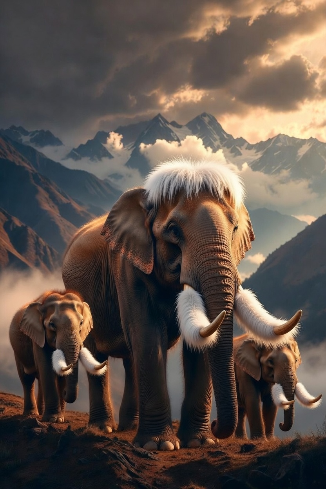
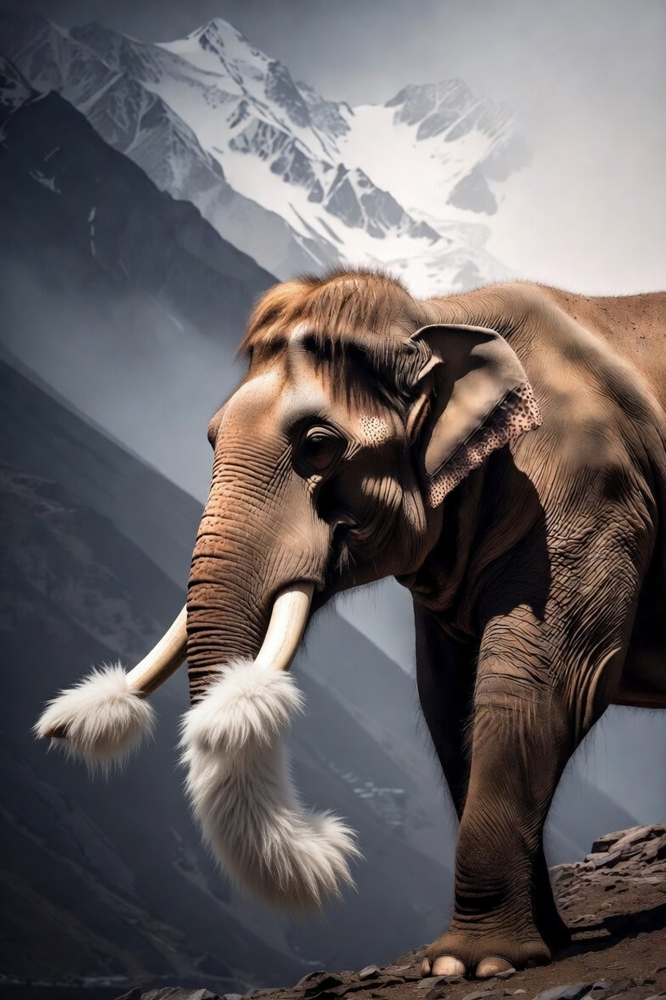
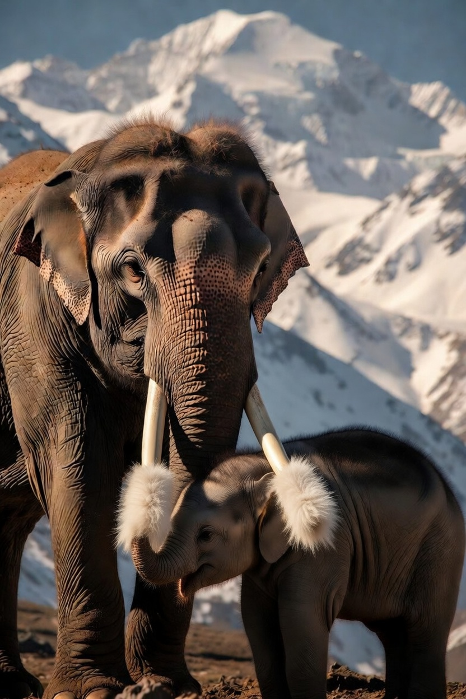
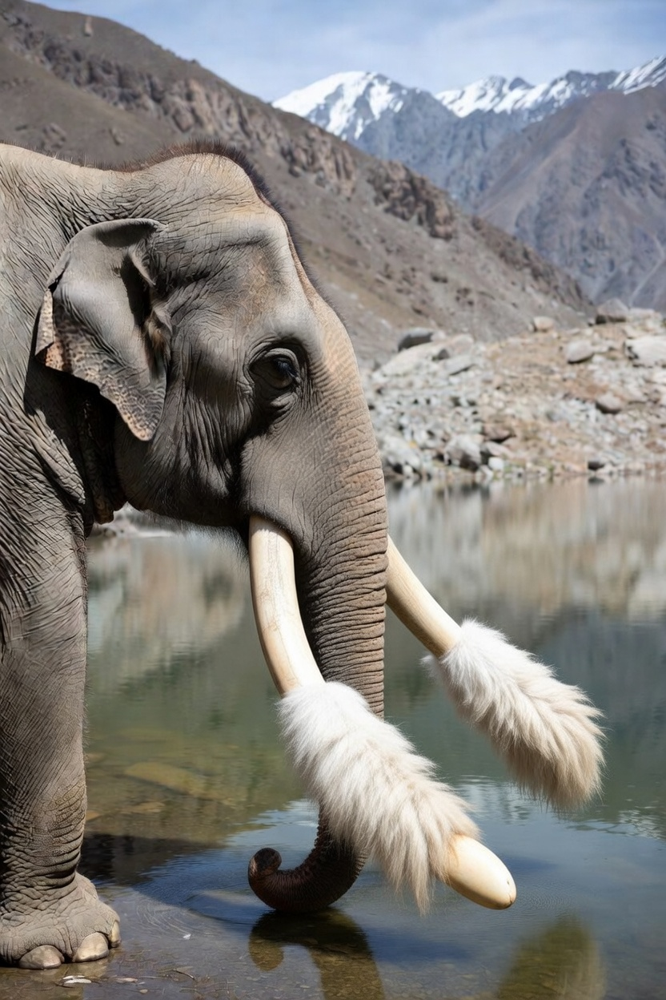
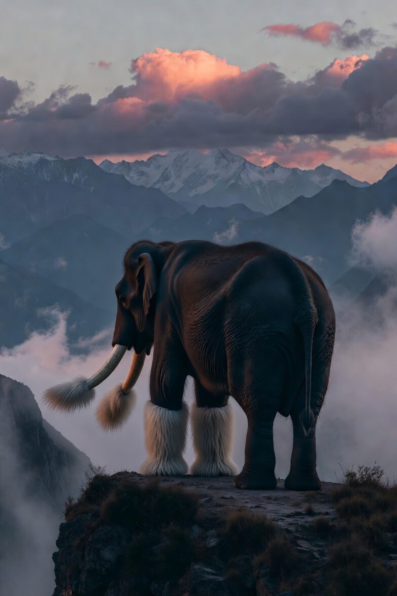

Учёные обнаружили в Гималаях новый вид слонов с пушистыми бивнями

Международная экспедиция сделала сенсационное открытие в труднодоступных районах Гималаев — новый вид азиатских слонов, бивни которых покрыты густой длинной белой шерстью.




«Это не просто новый вид. Это живое доказательство того, что пушистые бивни были распространены среди древних хоботных, включая мамонтов.»
— Доктор Анна Ковалёва, руководитель экспедиции
— Доктор Анна Ковалёва, руководитель экспедиции